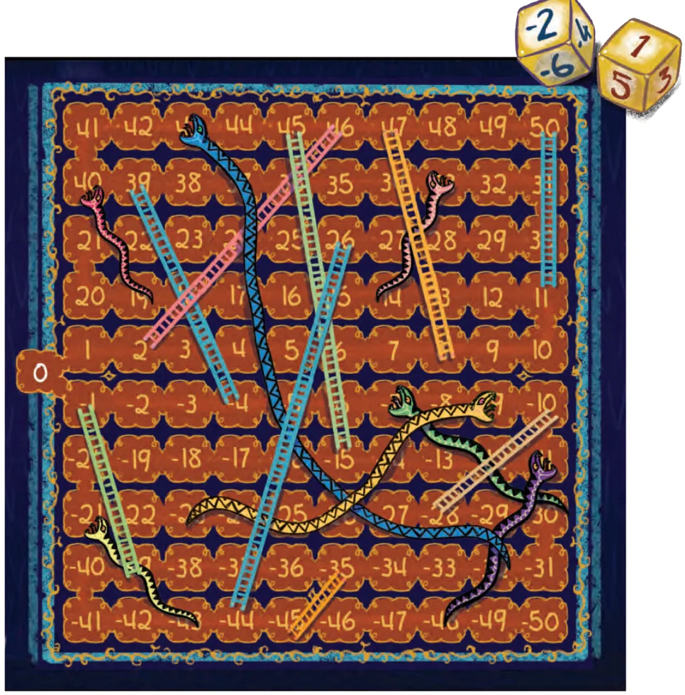

Surprisingly, negative numbers were still not accepted by many European mathematicians even in the 18th century. Lazare Carnot, a French mathematician in the 18th century, called negative numbers ‘absurd’. But over time, zero as well as negative numbers proved to be indispensable in global mathematics and science, and are now considered to be critical numbers on an equal footing with and as important as positive numbers - just as Brahmagupta had recommended and explicitly described way back in the year 628 CE! This abstraction of arithmetic rules on all numbers paved the way for the modern development of algebra, which we will learn about in future classes.
There are numbers that are less than zero. They are written with a ‘ - ’ sign in front of them (e.g., \(- 2)\), and are called negative numbers. They lie to the left of zero on the number line. The numbers ..., \(- 4\), \(- 3\), \(- 2\), \(- 1\), 0, 1, 2, 3, 4, ... are called integers. The numbers 1, 2, 3, 4, ... are called positive integers and the numbers …, \(- 4\), \(- 3\), \(- 2\), \(- 1\) are called negative integers. Zero (0) is neither positive nor negative. Every given number has another number associated to it which when added to the given number gives zero. This is called the additive inverse of the number. For example, the additive inverse of 7 is \(- 7\) and the additive inverse of \(- 543\) is 543. Addition can be interpreted as Starting Position + Movement = Target Position. Addition can also be interpreted as the combination of movements or increases/decreases: Movement \(1 +\) Movement \(2 =\) Total Movement. Subtraction can be interpreted as Target Position - Starting Position = Movement.
In general, we can add two numbers by following Brahmagupta’s Rules for Addition:
- a.If both numbers are positive, add the numbers and the result is a
positive number (e.g., \(2 + 3 = 5)\).
- b.If both numbers are negative, add the numbers (without the signs),
and then place a minus sign to obtain the result ( \(- 2 +\) ( \(- 3) = - 5)\).
- c.If one number is positive and the other is negative, subtract the
smaller number (without the sign) from the greater number (without the sign), and place the sign of the greater number to obtain the result (e.g., \(- 5 + 3 = - 2)\).
- d.A number plus its additive inverse is zero (e.g., \(2 +\) ( \(- 2) = 0)\).
- e.A number plus zero gives back the same number (e.g., \(- 2 + 0 = - 2)\).
We can subtract two integers by converting the problem into an addition problem and then following the rules of addition. Subtraction of an integer is the same as the addition of its additive inverse. Integers can be compared: … \(- 3 < - 2 < - 1 < 0 < +1 < +2 < +3 <\) ... Smaller numbers are to the left of larger numbers on the number line. We can give meaning to positive and negative numbers by interpreting them as credits and debits. We can also interpret positive numbers as distances above a reference point like the ground level. Similarly, negative numbers can be interpreted as distances below the ground level. When measuring temperatures in degrees Celsius, positive temperatures are those above the freezing point of water, and negative temperatures are those below the freezing point of water.
Integers: Snakes and Ladders
Rules
- •This is a two player game. Each player has 1 pawn. Both
players start at 0. Players can reach either \(- 50\) or \(+ 50\) to win but need not decide or fix this before or during play.
- •Each player rolls two dice at a time. One dice has numbers
from \(+ 1\) to \(+ 6\) and the other dice has numbers from \(- 1\) to \(- 6\).
- •After each roll of the two dice, the player can add or subtract
them in any order and then move the steps that indicate the result. A positive result means moving towards \(+ 50\) and a negative result means moving towards \(- 50\).
